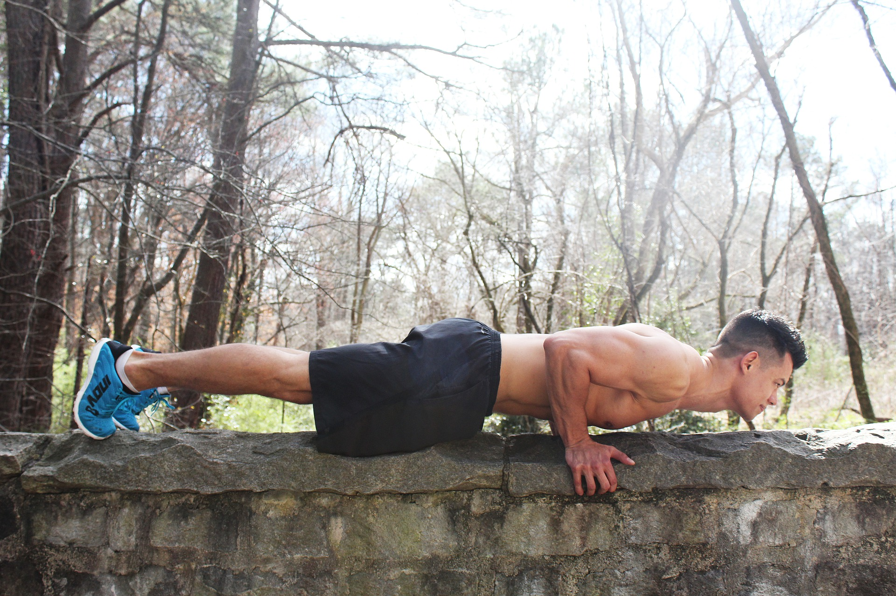

10 Benefits Of Push Ups
We all have done, more or less, some push ups in our workout routine.
But do we know what are their major benefits for our body?
By keepinspiring.me

Push ups are perhaps one of the easiest exercise movements. The standard push up activates
nearly every muscle in your body, which yields far more than toned muscles and increased
endurance. If you’re not convinced about adopting a push up routine into your exercise program,
or you simply wish to understand the power of this simple exercise, continue reading to uncover
the real benefits of doing push ups.
1. Increase Functional Strength via Full Body Activation
As you lower your body to the floor and the familiar “burn” begins to encompass your muscles the
last thing you’re thinking about is the number of muscles you’re using. However, this is one of
the top benefits of pushups. As you engage in this exercise, literally every major muscle in your
body is called upon to execute the movement.
Major muscle groups, such as your biceps, core muscles, triceps, anterior deltoids and lower body
muscle groups are activated to support your body while stabilizing your movements. Classified as
a compound exercise – meaning multiple muscle groups are called upon – you train the most important
muscles throughout your body.
2. Muscle Stretching for Health and Vitality
One of the most underrated benefits of doing push ups is the stretch it provides to your biceps and
back muscles. As you lower yourself to the floor, your back muscles are effectively stretched, and
as you push yourself to the starting position your biceps obtain a full stretch. This not only
improves your flexibility, which helps prevent injuries, but a well-stretched muscle feature a solid
and attractive appearance.
3. Enhance Your Cardiovascular System
As stated earlier, push ups are classified as a compound exercise as it calls upon multiple muscle
groups. When you simultaneously engage large muscle groups, your heart must work harder to deliver
oxygen-rich blood to muscle tissue. Ultimately, this activity results in an effective cardiovascular
exercise, which supports heart health and promotes the reduction of stored body fat.
4. Increase Whole Body Muscle Definition – HGH Promotion
Throughout the movements of a push up, you recruit a wide array of primary and stabilizing muscles.
The more muscle mass that’s utilized in a strength training exercise, the greater the production and
release of a specialized hormone known as HGH, or human growth hormone.
As a young man or woman, your body pumped out large concentrations of this specialized hormone to
support the natural growth of your entire body. However, as you age the natural release of HGH declines,
which makes building muscle a challenging task for older adults.
By calling upon such a wide array of muscles, the production of HGH is triggered, which ultimately
results in muscle hypertrophy – or muscle growth. To maximize push up benefits, you must incorporate
this exercise into your regular strength training program.
5. Protect Your Shoulders from Injury
One of the most debilitating, and common, injuries for older individuals is a rotator cuff injury.
While the severity of this injury is based upon a host of unique circumstances, protecting this
delicate part of your body must become a priority.
The standard push up has been found to be among the most effective ways to safeguard your shoulder
joints from injury; especially in older adults. Because push ups call upon stabilizing muscles,
which surround the rotator cuff joint, this area of the body is strengthened and conditioned for
dynamic movements.
By supporting the strength and health of primary and secondary shoulder muscles, the likelihood of
debilitating injuries significantly lowers.
6. Improve Your Posture
One of the most common reasons for a lack of proper posture is weak core muscles. In order to properly
hold your shoulders and back, your entire core must be strong enough to support its vertical positions.
When push ups are properly executed, the muscles responsible for supporting posture are strengthened
and fine-tuned. Moreover, as you regularly engage in push ups, your body will naturally lean toward
proper posture. This is one of the most influential passive benefits of push ups.
7. Prevent Lower Back Injuries
There are few injuries as debilitating as a lower back injury. This essential part of your body
supports practically every movement, so if it’s damaged or injured even the simplest of tasks can
become excruciatingly painful. As mentioned earlier, pushups call upon your entire torso to stabilize
its movements. By doing so, you strengthen this vulnerable part of the body.
By developing strength in this specific portion of your body, you cultivate muscles responsible for
reducing lower back pressure, which is imperative to prevent and treat low back injuries.
8. Save Time While Cultivating a Strong Body
When surveys are conducted to determine why an individual does not exercise more the most common answer
is a lack of time. We live increasingly busy lives, and while exercising is essential for a healthy body,
it’s most commonly the first activity eliminated from a daily list of chores. Although you may not have
time for a traditional strength training or cardiovascular workout, if you have five minutes you can
achieve a full-body workout with push ups. Want to add variation to this swift and potent exercise movement?
Delve into the many different hand and feet placements to target muscles from different angles, which supports
rapid strength and size development.
9. No Cost for a Full Body Workout
Although you may have a desire to join a world-class gym, their monthly dues may not fit in your tight
budget. Thankfully, you don’t need an expensive gym membership – or even any equipment – to obtain an
effective and thorough full body workout.
By engaging in push up exercises, you effectively fatigue major and minor muscle groups, which provide
the same benefits as a traditional full body exercise performed at the gym on expensive and cumbersome
equipment.
10. Increase Testosterone and Reduce Osteoporosis Development
As men and women age, the concentration of various hormones begin to dwindle. For men, the most prominent
loss is the reduction of circulating testosterone. While preliminary evidence requires further investigation,
several studies suggest the simple movements within a standard push up promotes testosterone production, which
is essential for a healthy body in both men and women.
Moreover, weight bearing exercises, such as the standard push up, supports stronger, more dense bones. This
increase in bone density may ward off debilitating skeletal system disorders, such as osteoporosis.